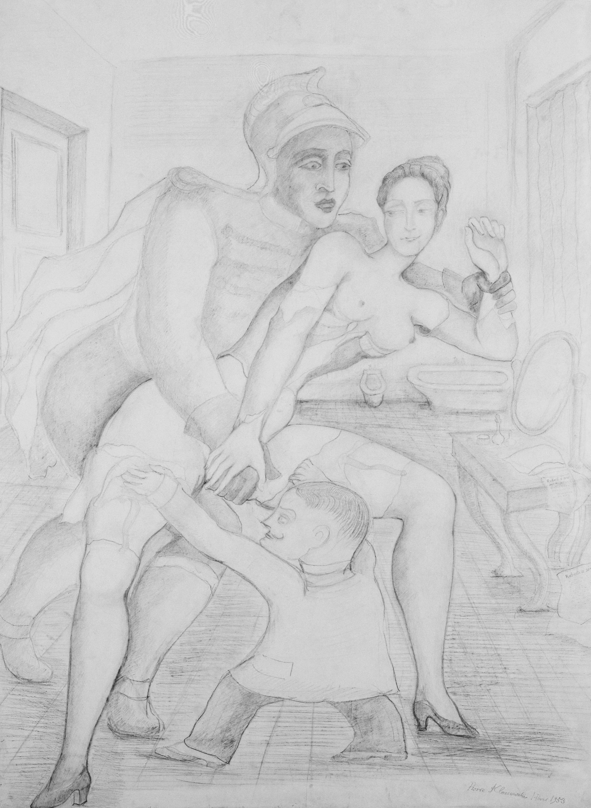

Lágrimas de Eros · Obra 114 de 124
Roberte y el coloso (variante)
Pierre Klossowski

Roberte, la protagonista de las novelas de Klossowski, desnuda salvo por las medias y los guantes, junto a un coloso de uniforme sin cabeza; la cabeza está en el suelo. El tema viene de «Roberte ce soir» (Minuit, 1953).
Lo que hace que destaque
Roberte, la protagonista de las novelas de Klossowski, desnuda salvo por las medias y los guantes, junto a un coloso de uniforme sin cabeza; la cabeza está en el suelo. El tema viene de «Roberte ce soir» (Minuit, 1953).
Contexto histórico
Sin identificar: no está entre las obras del tema «Roberte et le colosse» del catálogo razonado en línea (todas de 1971, posteriores al libro) ni entre los dibujos de 1953 para «Roberte ce soir».
Autoría y procedencia
Pierre Klossowski (1905-2001), escritor, traductor y dibujante francés, hermano mayor de Balthus, autor de reflexiones decisivas sobre Sade, Nietzsche y el erotismo.
En los libros
Las lágrimas de Eros, de Georges Bataille · Lámina de la p. 192
Ficha pendiente de contrastar con fuentes académicas.